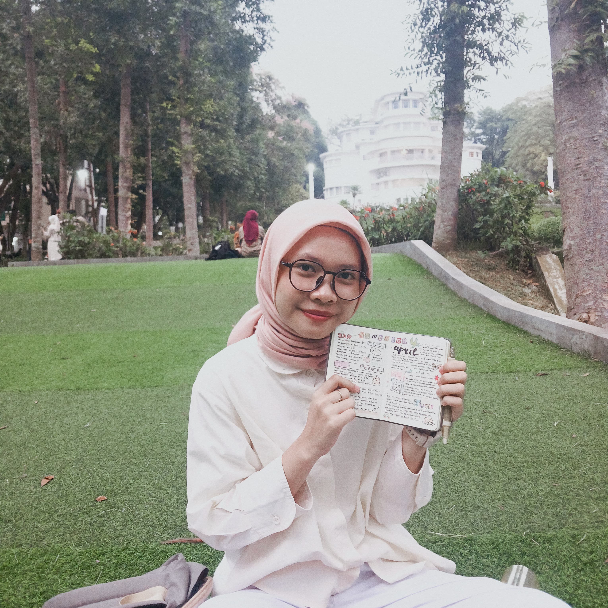
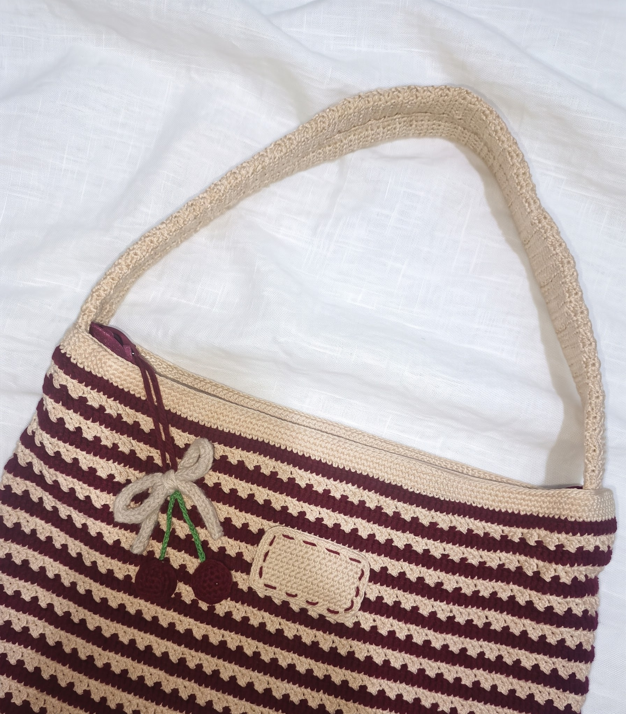
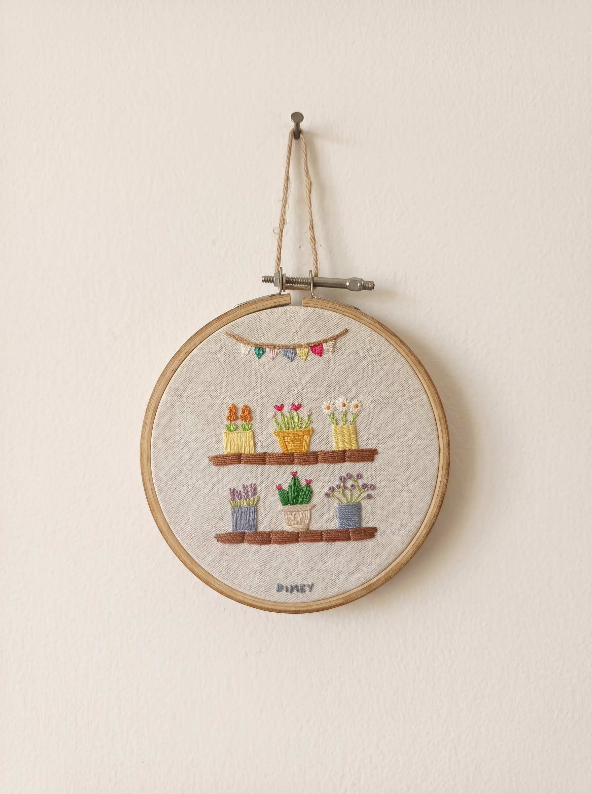
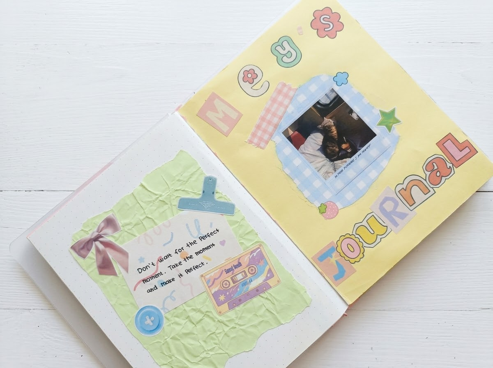

Aku tertarik pada hal-hal yang berhubungan dengan journaling, mulai dari menyusun halaman jurnal, mengoleksi stiker, sampai memadukan warna dan tekstur kertas. Karena itu, aku memilih tema scrapbook di halaman ini.
a little introduction ♡
Halo,
Halo,
Aku Dini!
Halo! Aku Dini Meydiani, seorang mahasiswa Teknik Logistik semester 5, yang suka mengabadikan cerita kecil, membuat karya handmade, dan menulis journal harian untuk mengatur jadwal sehari-hari.
"Small steps, little memories, and handmade things."

this is me! ♡
Sedikit detail informasi tentangku
Identitas ✿
- Nama
- Dini Meydiani
- Panggilan
- Dini / Dimey
- Program Studi
- Teknik Logistik
- Kampus
- Universitas Pendidikan Indonesia
- Semester
- 5
- Kelas
- A
Pengalaman berorganisasi, dan bekerja sama dengan teman-teman.

organization diary
Selama kuliah, aku mendapat kesempatan untuk belajar bekerja sama, bertanggung jawab, dan mengenal banyak teman melalui kegiatan organisasi dan kepanitiaan.
Berikut beberapa perjalanan yang menjadi bagian dari pengalaman organisasiku.
Staff Pengembangan Teknik Logistik2025-2026
Bergabung sebagai staff Bidang Pengembangan Teknik Logistik HMTL FPTI UPI. Aku mengikuti berbagai kegiatan kepanitiaan dan berkolaborasi dengan teman-teman dari bidang lainnya.
Ketua Pelaksana ACEM 2026
Menjadi Ketua Pelaksana Academic Coaching and Empowerment (ACEM) 2026, sebuah pengalaman yang mengajarkanku tentang koordinasi, komunikasi, perencanaan, dan tanggung jawab dalam menjalankan sebuah kegiatan.
Wakil Ketua Bidang Pengembangan Teknik Logistik 2026-2027
Melanjutkan perjalanan di HMTL FPTI UPI sebagai Wakil Ketua Bidang Pengembangan Teknik Logistik. Aku ingin terus belajar, berkembang, dan berkontribusi bersama tim.
Made by hand ♡
Salah satu hal yang aku suka adalah membuat sesuatu dengan tangan sendiri. Aku senang merajut, menyulam, dan menjahit. Bagiku, proses membuat karya handmade adalah cara menyenangkan untuk berkreasi, belajar hal baru, dan menikmati waktu luang.
handmade with love ♡
Crochet 🧶

Embroidery 🌷

Journaling
Beberapa Karya yang aku buat♡
Other Little Things I Love
Books & Stories
Terkadang aku juga suka membaca buku, yang dipinjam dari Perpustakaan. Biasanya membaca novel, dan saat ini sedang membaca novel Funiculi Funicula: Before The Coffe Gets Cold karya Toshikazu Kawaguchi.
Music Corner
Musik juga sering aku dengarkan saat mengerjakan tugas... dan aku suka musik K-pop juga, terutama suka EXO dan suka Cortis akhir-akhir ini:)).
Journal Time
Mengisi jurnal, jadwal perkuliahan, To-Do-List, dan List Tugas Kuliah dengan tambahan stiker, untuk meromantisasi tugas-tugas kuliah itu.